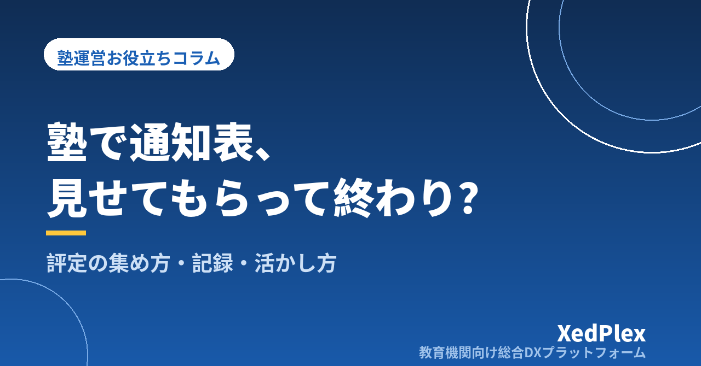

塾で生徒の通知表をどう預かり、どう活かす？｜評定の集め方・記録の項目・面談と次学期の指導につなげる型

学期末が近づくと、「通知表、塾にも見せてね」と生徒に声をかける塾は多いと思います。ところが実際には、持ってくる生徒と忘れる生徒がまちまちで、見せてもらっても「頑張ったね」と声をかけて終わり。いざ受験の面談になって「中2の3学期の評定、いくつだったっけ？」と探し回る──個人塾・小規模塾の塾長からよく聞く話です。
通知表の評定は、定期テストの点数だけでは見えない提出物・授業態度・実技教科を含めた学校からの評価です。高校入試では内申点として扱われる地域も多く、塾が把握しておく価値は小さくありません。この記事では、通知表を「見せてもらって終わり」にせず、集め方・記録の項目・扱いのルール・面談と次学期の指導への活かし方までを、少人数の塾でも回る型として整理します。
なぜ通知表の情報は塾に残らないのか
通知表が塾の記録として残らない原因は、塾長の意識の問題というより、集める・残す・使うの3つが決まっていないことにあります。
| つまずき | よくある状態 | 結果 |
|---|---|---|
| 集める | 「持ってきてね」と口頭で言うだけ。期限も方法も決まっていない | 提出は一部の生徒だけ。毎学期そろわない |
| 残す | 見せてもらったら返却。メモは講師の手帳や頭の中 | 半年後には誰も数字を覚えていない |
| 使う | 見たその場で一言コメントするだけ | 次学期の指導や面談の材料にならない |
逆にいえば、この3つをそれぞれ一度決めてしまえば、学期末ごとに同じ手順を繰り返すだけで記録が積み上がっていきます。
ステップ1：集め方を決める（時期・方法・保護者への頼み方）
集める時期を年間予定に入れる
通知表が配られる時期は学校によって異なります。3学期制の学校なら7月・12月・3月、2学期制の学校なら10月前後と3月が一般的です。在籍生徒の学校がどちらかを名簿に記録しておき、「配布日の翌週までに提出」を塾の年間予定に書き込んでおくと、毎回思い出す必要がなくなります。塾の年間事務カレンダーにまとめておくのがおすすめです。
方法は「原本を預からない」が基本
通知表の原本を塾で預かると、紛失や返却忘れのリスクを塾が負うことになります。小規模塾で無理なく続けやすいのは、次のどちらかです。
- 来塾時に原本を見せてもらい、その場で講師が評定を書き写して返す（コピーを残さない方法）
- 保護者に評定部分だけを写真で送ってもらう（所見欄や出欠欄までは求めない）
どちらの場合も、塾が残すのは「必要な数字」だけにしておくと、管理の負担と情報漏えいのリスクを小さくできます。
保護者への頼み方は「目的」を添える
通知表は家庭にとってデリケートな書類です。何のために見せてほしいのかを伝えずに求めると、成績が振るわなかった家庭ほど出しづらくなります。依頼の文面には、目的と扱い方を一緒に書いておきましょう。
「2学期の通知表が配られましたら、評定（5段階の数字）の部分だけご共有ください。3学期の学習計画と、提出物・授業での取り組みのサポートに使います。いただいた内容は担当講師と塾長のみが確認し、指導以外の目的には使いません。」
文面を毎回考えなくて済むよう、テンプレートとして保存しておき、学期末に一斉配信するのが効率的です。
ステップ2：記録する項目を絞る
通知表には多くの情報が載っていますが、塾がすべてを書き写す必要はありません。指導と面談に使う項目だけに絞ります。
| 項目 | 記録する理由 |
|---|---|
| 学年・学期 | 推移を追うための見出し |
| 9教科の評定 | 主要5教科だけでなく実技4教科も。入試での扱いは地域によって異なるため、まずは全教科を残す |
| 前学期からの変化 | 上がった・下がった教科をひと目で分かるように |
| 観点別評価で気になる点（任意） | 「主体的に学習に取り組む態度」が低いなど、提出物や授業態度の課題のヒントになる |
| 生徒・保護者のひとこと（任意） | 本人がどう受け止めたか。次の目標を決める材料 |
記録の置き場所は、テストの点数と同じ場所にまとめるのがポイントです。定期テストの点数と評定が別々のファイルにあると、「点数は取れているのに評定が上がらない」といった比較ができません。成績記録全体の整え方は塾の成績管理の方法でも解説しています。
ステップ3：扱いのルールを決めておく
評定は生徒の個人情報です。少人数の塾でも、次の3点は最初に決めて講師と共有しておきましょう。
- 見られる人を決める：担当講師と塾長に限定し、他の生徒の目に触れる場所で記録しない。
- 写真・コピーの扱いを決める：講師個人のスマホに保存しない、塾の管理場所に記録したら元の画像は削除する、などのルールを決める。
- 使う目的を限定する：指導と面談に使い、チラシやSNSでの実績紹介には本人・保護者の同意なく使わない。
個人情報の扱い方の基本は塾が守るべき生徒の個人情報管理の基本にまとめています。法令上の判断が必要な場面では、所轄の行政機関や専門家に確認してください。
ステップ4：面談と次学期の指導に活かす
評定とテストの点数を並べて「ずれ」を見る
記録が2学期分そろうと、評定とテストの点数を並べて見られるようになります。特に注目したいのは、次のような「ずれ」です。
- テストは取れているのに評定が伸びない：提出物や授業態度の評価が影響している可能性があります。中学生の提出物管理の見直しが次の一手になります。
- 評定は維持しているがテストが下がっている：次の定期テストで評定が下がる前兆かもしれません。定期テスト対策期間の運営で早めに手を打てます。
- 実技教科だけ低い：塾の授業では扱わない教科でも、受験学年なら提出物や実技テストの準備の声かけはできます。
生徒本人とは「5分の振り返り」をする
通知表を受け取ったタイミングは、生徒が自分の学校生活を振り返るよい機会でもあります。授業の前後に5分だけ時間を取り、「上がった教科は何を頑張ったからか」「下がった教科で次の学期に変えることは何か」を本人の言葉で聞き、ひとことで記録しておきます。塾長や講師が評価を伝えるのではなく、本人が次の目標を1つ決めるところまでで十分です。その目標を次の学期の学習計画に書き込んでおけば、学期の途中で声をかけるきっかけにもなります。
保護者面談では「次の学期にやること」まで話す
面談で評定を話題にするときは、数字の良し悪しを伝えるだけで終わらせず、「事実（評定と推移）→ 塾の見立て → 次学期に塾と家庭でやること」の順で話すと、保護者にとって具体的な材料になります。成績が思うように上がらない場合の伝え方は成績が伸びないときの保護者への説明、面談資料の作り方は保護者面談の準備を1時間で終わらせる方法が参考になります。
受験学年は早めに一覧にしておく
高校入試で内申点がどの学年・どの学期の評定から算出されるか、どう換算されるかは、都道府県によって異なります。地域の入試制度を確認したうえで、対象となる学年・学期の評定を受験学年に入る前から一覧にしておくと、志望校の相談がスムーズになります。受験期の保護者との情報共有については受験期の保護者との情報共有もあわせてご覧ください。
まとめ：学期末ごとに同じ手順を繰り返すだけで記録は育つ
通知表の評定を塾の記録として活かすには、特別な仕組みは要りません。集める時期と方法を決め、記録する項目を絞り、扱いのルールを共有し、面談と次学期の指導で使う。この4つを一度決めてしまえば、学期末ごとに同じ手順を繰り返すだけです。
まずは今学期、在籍生徒の学校が3学期制か2学期制かを名簿で確認し、配布予定日の翌週に「評定の共有のお願い」を出すところから始めてみてください。1年後には、生徒ごとの評定の推移が手元にそろい、面談や進路相談の質が変わっているはずです。
この記事を書いた運営より
私たちは、個人経営・小規模の学習塾向けに、生徒管理・QRコードでの入退室記録・月次請求・保護者へのLINE/メール通知・AIによる学習支援までをひとつにまとめた教育機関向け総合DXプラットフォーム「XedPlex（ゼドプレックス）」を開発・提供しています。初期費用は0円、料金は生徒1名あたり月額300円（税込）から。生徒50名の塾なら月15,000円（税込）です。全国8つの教室で導入されており、導入塾には紹介ホームページの無料作成も行っています。機能の詳細説明はこちら。
XedPlexの詳細を見る